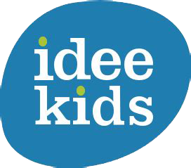
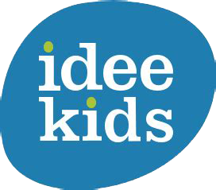

Participant Zoohackathon - 2020
In 2020, I took part in a hackaton at European level. My team consisted of - apart from myself - someone from Spain, someone from the Netherlands and someone from Germany. The main concept of this hackaton was 'the fight against wildlife trafficking'. In particular, the assignment for my team was to design and program a prototype that would make children aware of the existence and consequences of wildtrafficking in an educational and preventive way. Our final product was a VR application called 'Pango To Rescue' which teaches children in a playful way what wildtrafficking is.


 
